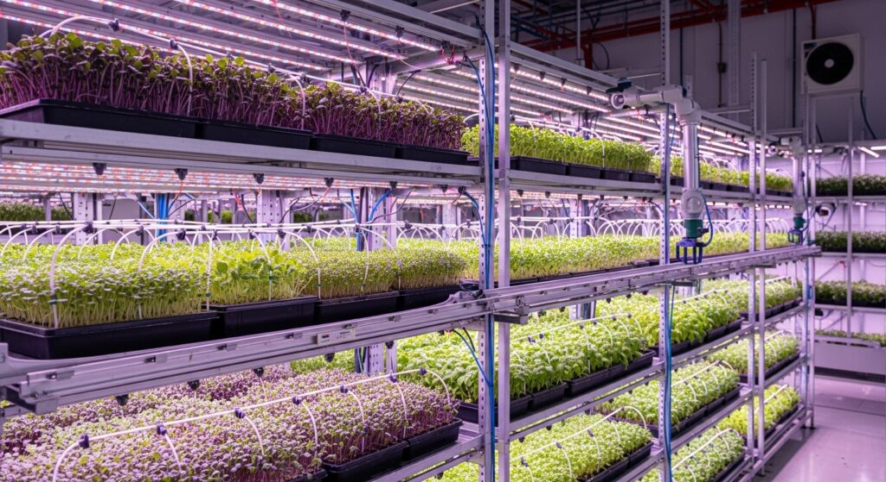

🌱
Controlled Indoor Farming
We grow in a managed indoor environment to maintain cleaner, safer, and more consistent produce.
At Microgreeney, we grow premium indoor microgreens with a strong focus on freshness, hygiene, and consistency. Our goal is to deliver nutrient-rich greens that fit perfectly into healthier daily meals.
From careful growing conditions to reliable delivery, every step is designed to give our customers clean produce and a better food experience.

Microgreeney began with a simple mission — to make fresh, clean, and high-quality microgreens more accessible to everyday customers. We saw the growing need for healthier food choices and believed indoor farming could provide a better way to produce greens with greater consistency and care.
By using a controlled growing environment, we are able to focus on hygiene, freshness, and stable quality in every batch. What started as a small idea has grown into a dedicated effort to supply homes, restaurants, and health-conscious customers with premium microgreens they can trust.
We grow in a managed indoor environment to maintain cleaner, safer, and more consistent produce.
Our microgreens are handled with care so customers receive fresh harvests with strong quality and taste.
We aim to deliver a dependable experience for homes, small businesses, cafés, and restaurants.
To provide fresh, nutritious, and premium-quality microgreens through clean indoor farming while supporting healthier lifestyles and better everyday meals.
To become a trusted local microgreen brand known for freshness, consistency, and innovation in indoor farming.
As Microgreeney grows, we aim to expand our product range, improve our indoor farming systems, and serve even more customers who value clean and nutritious food. We believe that small greens can make a big difference in everyday health, presentation, and food quality.
More than just a business, Microgreeney represents a commitment to freshness, consistency, and a healthier way of living.